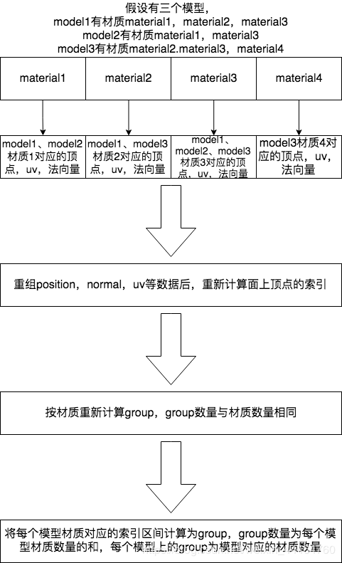
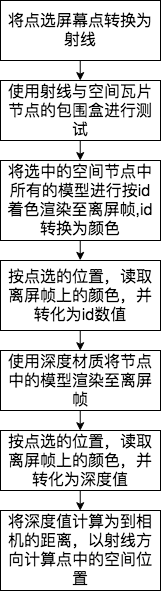
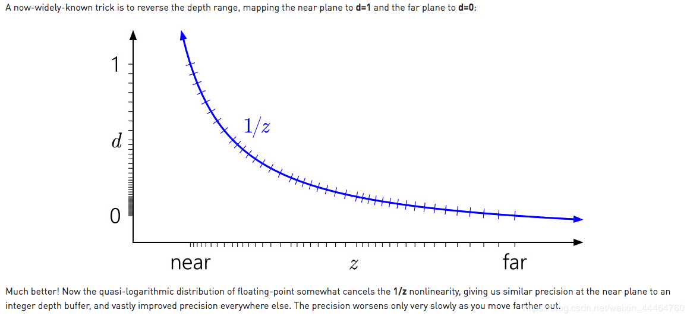

3dtiles作为由cesium公开的三维瓦片数据协议，其相关文档可以参考如下连接的文档
https://cesium.com/presentations/files/3DTilesInAction.pdf
3dtiles作为一个三维空间瓦片化分，提供了支持大场景加载的基础。tileset.json作为三维空间划分数据的入口，组织了一棵三维空间瓦片树。
关于该三维空间树的数据结构可参考如下文章连接
https://github.com/AnalyticalGraphicsInc/3d-tiles/tree/master/specification
以下3dtiles实现以八叉树数据结构，b3dm模型数据为例进行描述介绍。
我们现对模型数据进行数据的空间划分，进行数据预处理，从而减少客户端需要进行数据处理的时间以及计算复杂度。
将模型按照空间划分，采用空间八叉树的方式，以模型的包围盒进行计算像素误差，并归并如像素误差对应的八叉树层级。
将每个空间节点的模型进行合并，成为一个b3dm的数据文件。b3dm的数据格式相关的文档连接如下
https://github.com/AnalyticalGraphicsInc/3d-tiles/tree/master/specification/TileFormats/BatchTable
在数据组织生成时，将相同材质部分的模型进行合并，该数据能有效的减少drawcall，配合batchtable的使用，能仍支持每个模型的区分。
由于threejs没有提供b3dm文件的加载格式，由于b3dm数据与gltf格式接近，可以使用gltfloader.js进行改造得到。
解析后得到threejs的mesh数据格式。将解析出来的mesh数据进行处理。处理成一个mesh，相同材质模型数据合并。

在cesium中使用了特定的shader进行picking的支持，使用depth进行三维点的计算，picking着色时使用batchid进行模型的单个着色。该方法没有额外的drawcall开销。
该方法在threejs中实现需要自行开发shader。
简单实现则是使用计算出来的每个模型对应mesh索引区间生成一个新的group，将整个mesh使用新的材质组进行渲染，但是会明显增加drawcall。重排索引能减少drawcall的次数，但会增加cpu与gpu数据重传的开销。方案具体分析问题具体采用实现。
当然编写一个shader支持使用batchid方式的着色技术性能更加卓越，应没有使用该方式，故不做具体分析。
关于在3dtiles数据基础上实现picking的方式

由于threejs的深度图精度只有255，存在较大的误差，需要提高精度做如下深度图设置
depthMaterial.depthPacking = THREE.RGBADepthPacking;
gpu中深度分布公式参考如下文章
https://developer.nvidia.com/content/depth-precision-visualized
https://www.sjbaker.org/steve/omniv/love_your_z_buffer.html
depth的分布公式如下
z_buffer_value = (1<<N) * ( a + b / z )
将深度值计算为空间坐标的算法可参考如下文档连接
https://mynameismjp.wordpress.com/2010/09/05/position-from-depth-3/
设置logarithmicDepthBuffer为true能提高深度值的精度。//这个没有测试出预期结果

从计算公式上看是有一定理论依据的
实现后如下
//color为读取深度图得到的rgba颜色
var temp = 256;
var depth = 0;
for (var i = 3; i >= 0; --i) { //rgba (从a 开始) 读4 个字节
depth += color[i] / temp;
temp *= 256;
}
//根据depth深度分布公式推导的计算公式，推导过程省略
depth = camera.near * camera.far / (camera.near * depth + camera.far * (1 - depth)); //转换为长度后的深度值
var dist = depth / camera.getWorldDirection().dot(raycaster.ray.direction); //除以cos(alpha)
let direction = raycaster.ray.direction.normalize();
var position = new THREE.Vector3(0, 0, 0).addVectors(camera.position, direction.multiplyScalar(dist));
一下为相关的picking示例
https://raw.githack.com/1147079942/three.js/gpu_picking/examples/webgl_gpu_picking_point.html